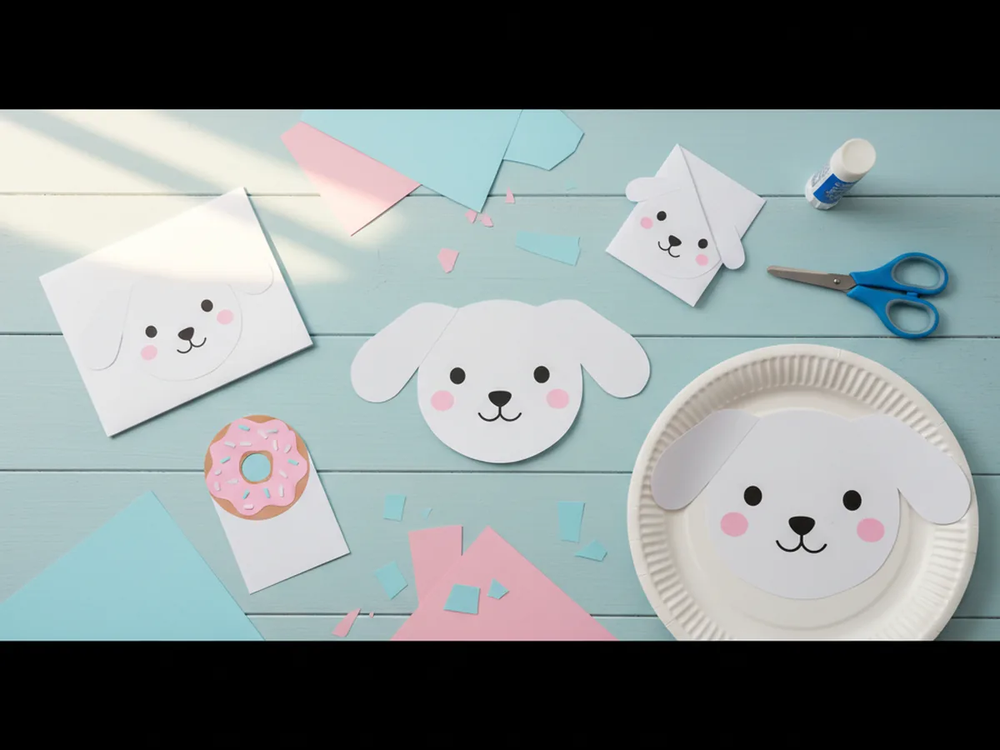
If your little one melts every time those long fluffy ears appear on a sticker or a t-shirt, you are going to love this list. These Cinnamoroll paper crafts turn a sweet pastel afternoon into a warm shared moment, with no fancy supplies and no big mess. Just paper, glue, and a few markers. ☁️
We pulled together 20 of our favorite ideas, from soft paper dolls and corner bookmarks to cloud mobiles and tiny treat boxes. Whether your child is just starting to hold scissors or already loves making little stationery sets, there is a project here that fits.
What You'll Need
Most of these Cinnamoroll paper crafts share the same basic supplies, so one quick check covers nearly the whole list.
- White cardstock 8.5 x 11, the perfect base for Cinnamoroll's signature soft white body.
- Crayola construction paper in assorted colors, for soft blue clouds, pink hearts, and pastel accents.
- Fiskars blunt-tip kids scissors, safe for little hands and easy to use.
- Elmer's washable purple glue sticks, mess-free and perfect for paper.
- Crayola pastel super tips markers, for soft pinks, blues, and yellows that match Cinnamoroll's vibe.
- Sharpie ultra fine point black markers, for drawing those tiny eyes and cute mouth dots.
- Self-adhesive googly eyes, for an instant cute upgrade on 3D crafts.
- Cinnamoroll washi tape set, the easiest way to add an instant pastel border or accent.
- Optional extras: hole punch, ribbon, paper plates, paper cups, and washi sticker sheets.
20 Adorable Cinnamoroll Paper Craft Ideas
1. Cinnamoroll Paper Doll
Cut a simple chubby doll shape from white cardstock, glue on two long droopy ears, and draw the tiny black dot eyes and rosy cheeks. A small pastel blue collar with a yellow star button finishes the look. This is one of those Cinnamoroll paper crafts kids can decorate in their own way and play with for days afterward.
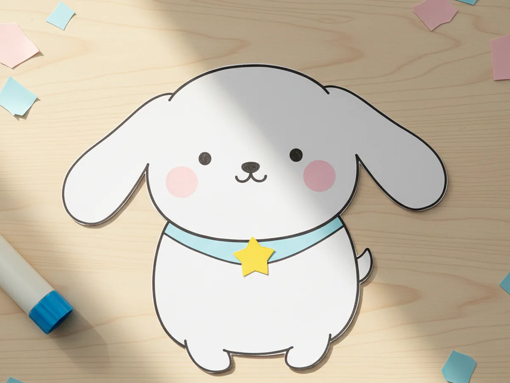
2. Cinnamoroll Greeting Card
Fold a piece of pastel blue cardstock in half, then glue a Cinnamoroll face cutout on the front and add a tiny pink heart in the corner. Inside, your child can write a sweet message for a friend or grandma. It feels personal, looks polished, and only takes about twenty minutes from start to finish.
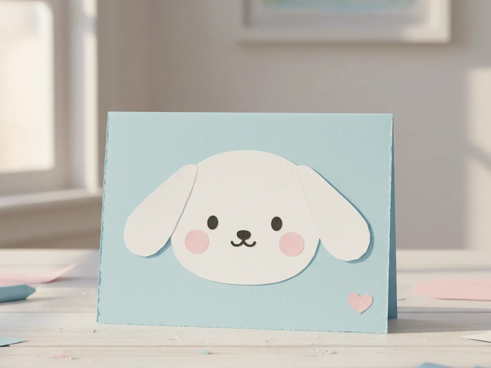
3. Cinnamoroll Corner Bookmark
Fold a square of white paper into a triangle pocket and decorate the front with Cinnamoroll's face, ears, and tiny smile. The bookmark slips right onto the corner of any book page and feels just a little bit special every time your child picks up a story. Perfect for early readers who love their books.
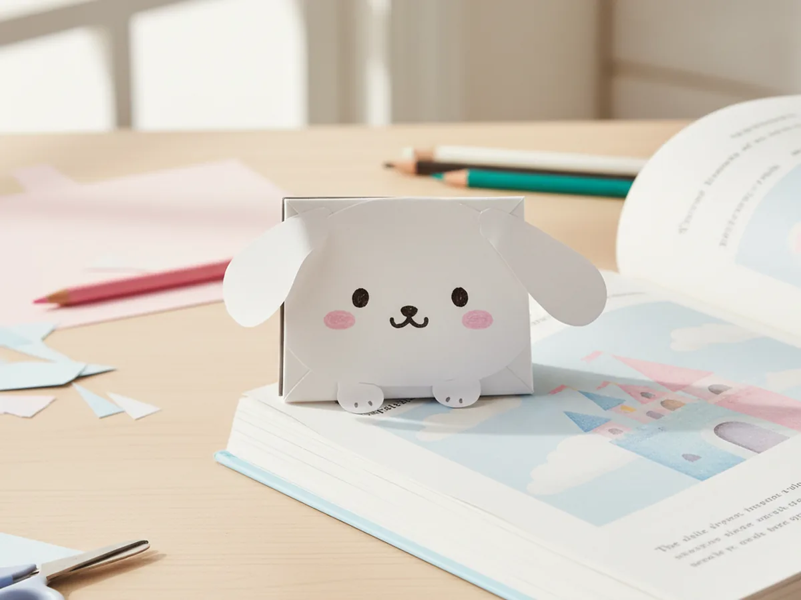
4. Cinnamoroll Origami Face
Fold a white square into a simple puppy face shape with two folded-down corners for ears, then draw on the eyes, mouth, and pink cheeks with a marker. It is a lovely first origami project for kids who want something quick and rewarding. Hang a few of them on a string for a sweet little garland.
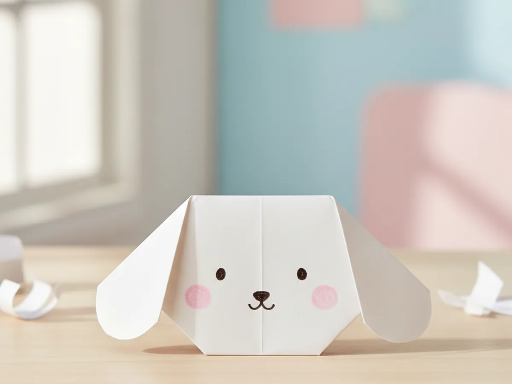
5. Cinnamoroll Paper Donut
Cut a donut shape from light brown cardstock, glue a fluffy pink frosting layer on top, and add tiny paper sprinkles. Then glue a small Cinnamoroll face peeking out from one side as if he is sneaking a bite. This cute paper craft is one of those ideas that always makes kids giggle when the donut is finally finished. 🍩
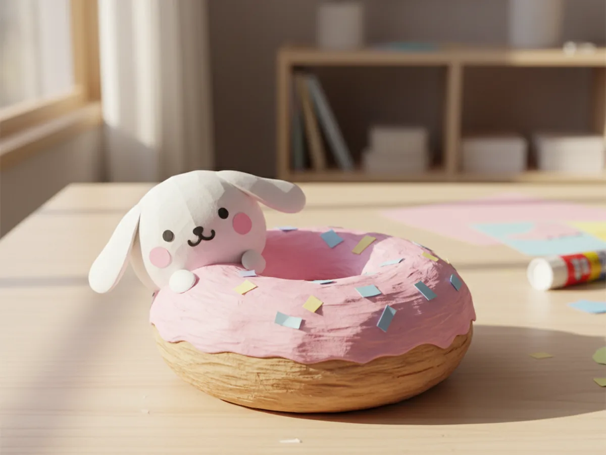
6. Cinnamoroll Bunting Garland
Cut several small triangular flags from pastel paper, glue a tiny Cinnamoroll head on every other flag, and string them all on a length of bakery twine. Drape the finished bunting across a bedroom shelf or a birthday party table. It feels festive and cute without taking the whole afternoon to put together.
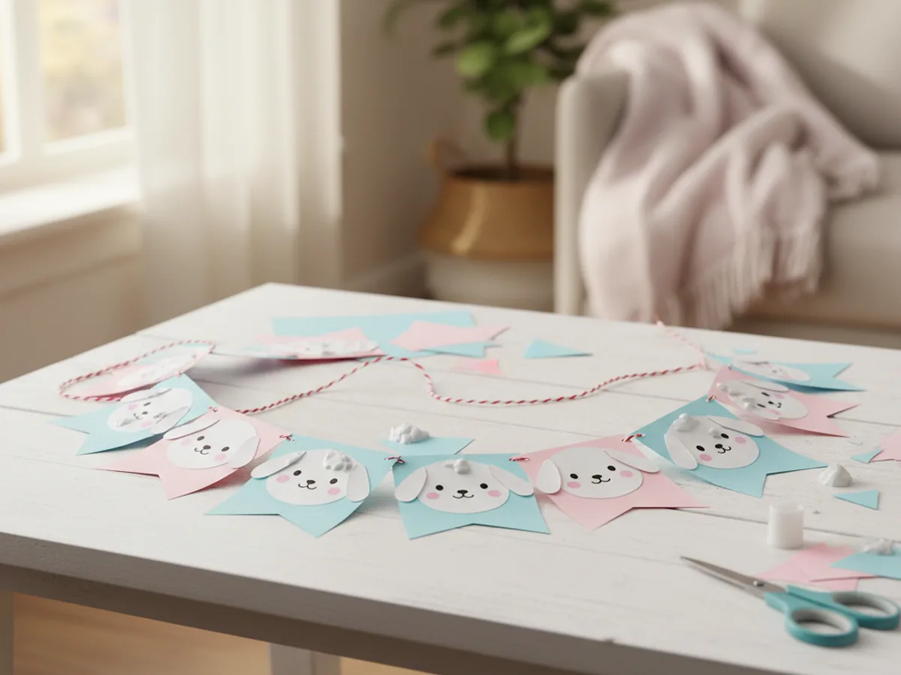
7. Cinnamoroll Paper Headband
Cut a long strip of white cardstock to fit your child's head, then glue two tall floppy Cinnamoroll ears on the top. Add a small pink heart in the middle for a little extra charm. Kids love wearing these around the house, and the result is a no-sew costume piece that feels surprisingly polished.
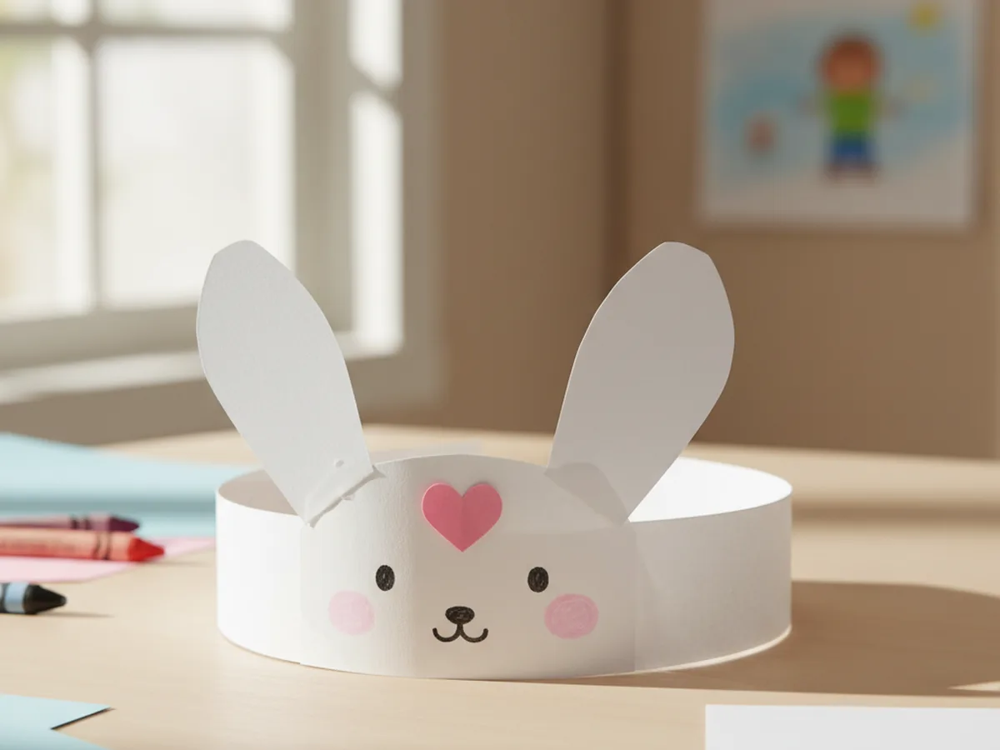
8. Cinnamoroll Paper Plate Face
Use a small white paper plate as the round face, glue on two long droopy ears, and draw the eyes, blush cheeks, and a tiny pink mouth. It comes together in about twenty minutes and looks adorable hanging on a kid's bedroom wall. These simple Cinnamoroll paper crafts are wonderful for younger toddlers because the paper plate is already the perfect base shape.
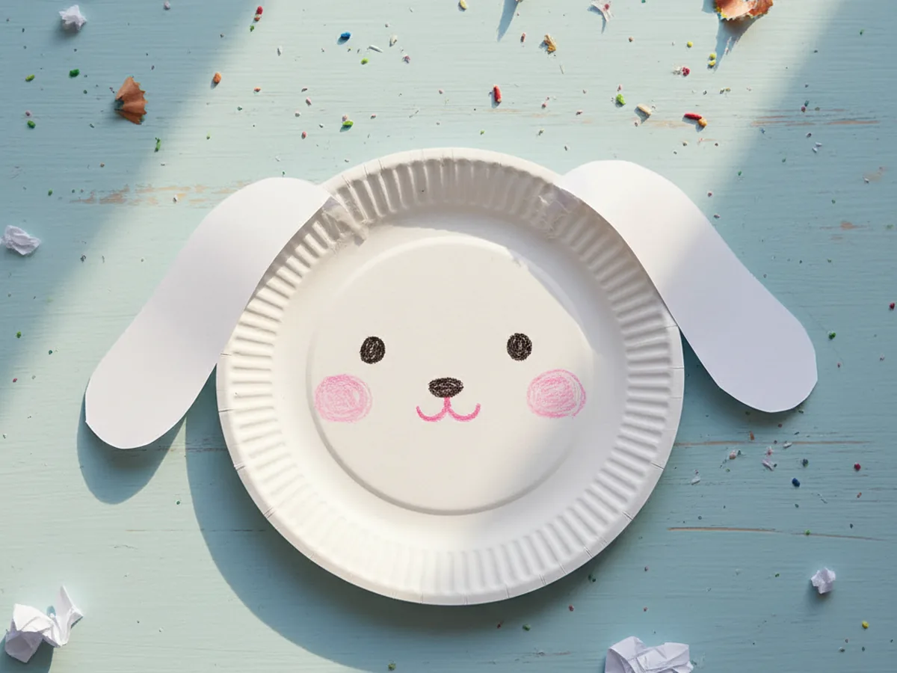
9. Cinnamoroll Pencil Holder
Wrap a clean paper cup in white paper, glue on a Cinnamoroll face plus two ears that flop over the top edge, and you have a darling desk accessory. Fill it with pastel pencils or crayons and place it on your child's homework corner. It is a great rainy-afternoon project that ends with something genuinely useful.
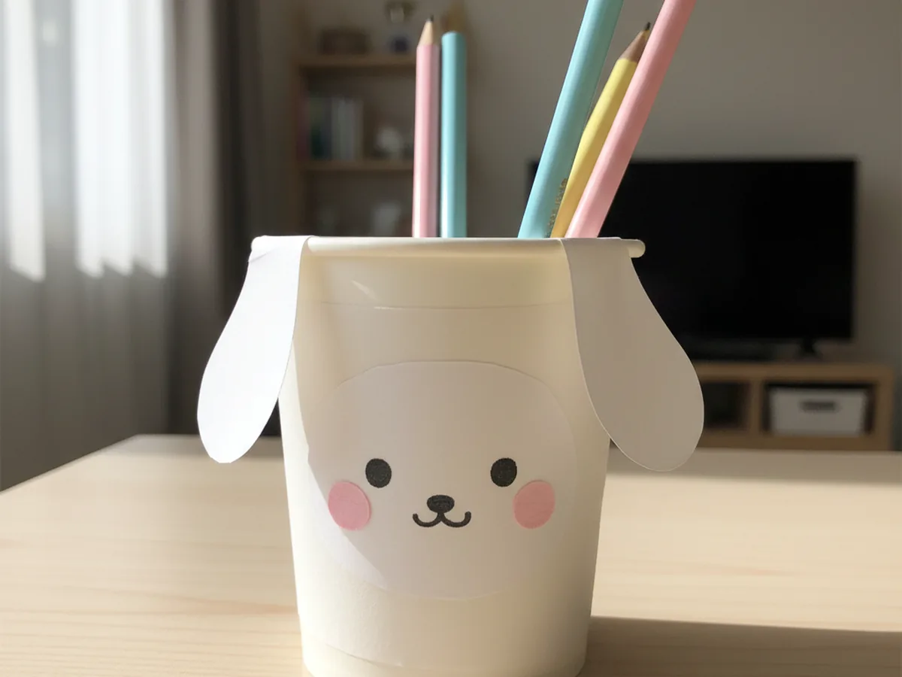
10. Cinnamoroll Mini Notebook Cover
Cover a small notebook in white paper, then decorate the front with a hand-drawn Cinnamoroll face and a few tiny clouds floating around. Add washi tape edges in soft blue for a finished frame. Your child will reach for this notebook every time it is time to draw or write.
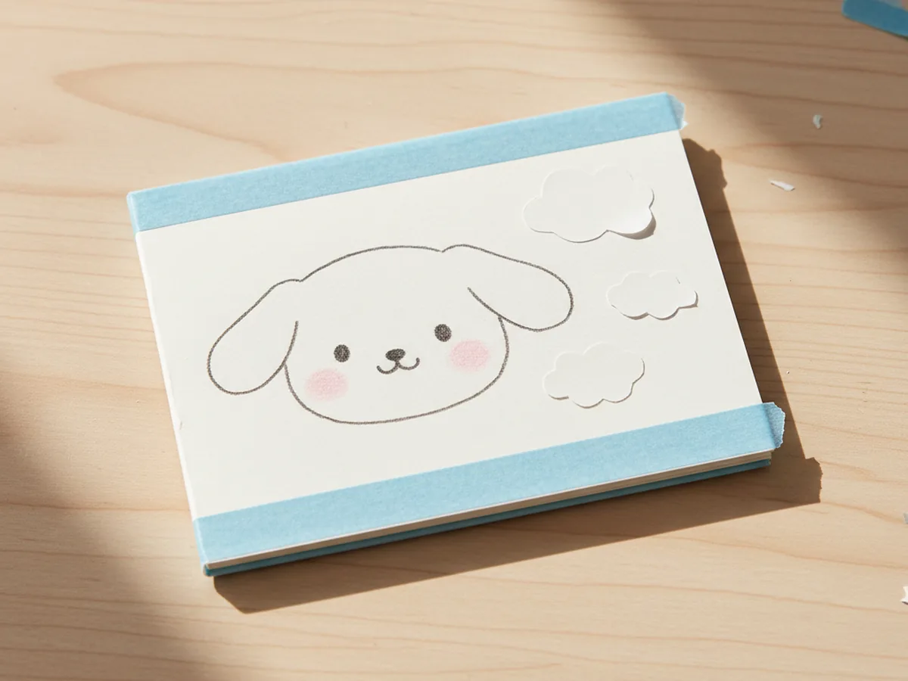
11. Cinnamoroll Paper Bag Puppet
Use a small white paper lunch bag as the puppet body and glue on the Cinnamoroll face, two long ears, and a fluffy paper tail at the back. Slip a hand inside and the whole face moves up and down. Kids absolutely love putting on little puppet shows, and this is a wonderful pretend-play craft.
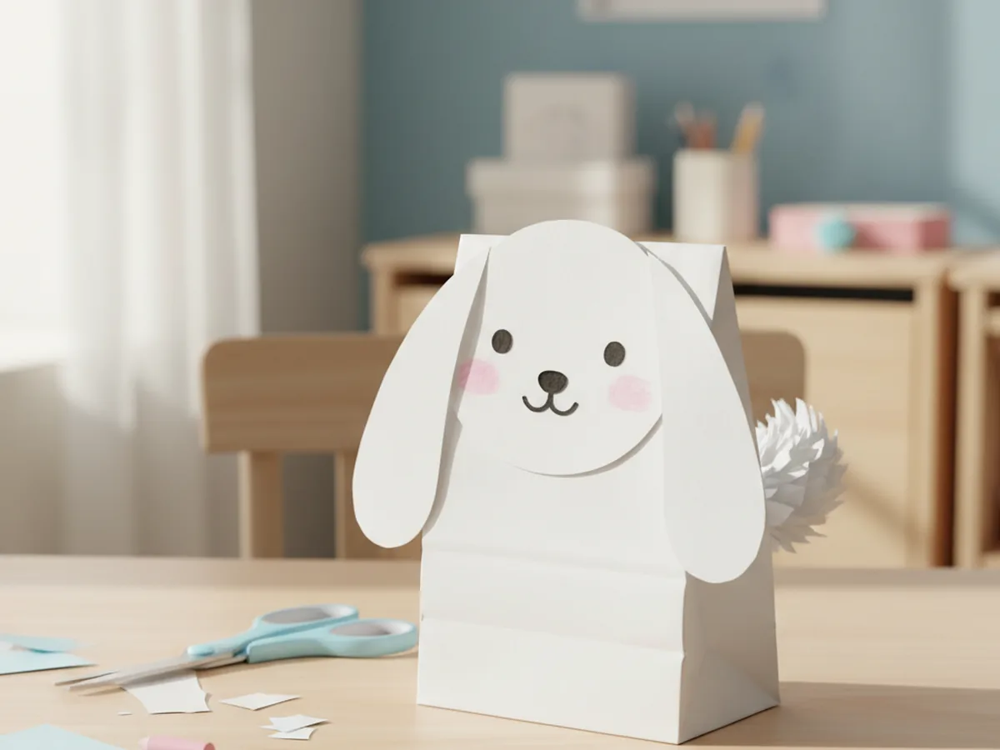
12. Cinnamoroll Window Cling
Trace a Cinnamoroll silhouette onto contact paper, peel off the backing, and let your child press torn pieces of pastel tissue paper inside the shape. Trim the edges and stick the finished cling on a sunny window. The soft glow that comes through is genuinely magical, especially in the morning light. ✨
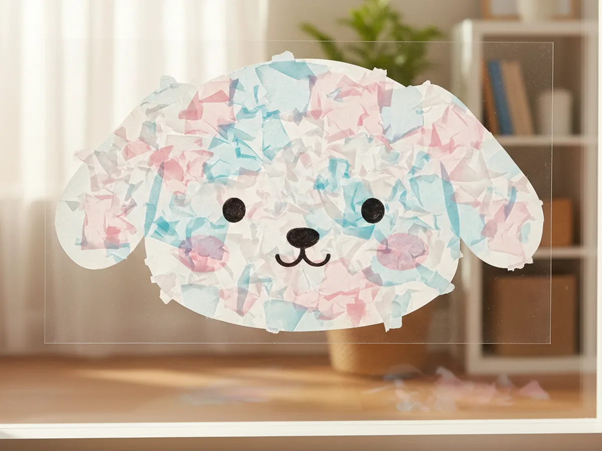
13. Cinnamoroll Paper Lantern
Fold a rectangle of white cardstock in half lengthwise, snip evenly spaced cuts along the folded edge, then unfold and roll into a cylinder. Glue on a small Cinnamoroll face at the front and add pastel washi tape to the top and bottom. Hang a few in a kid's bedroom for a soft, no-electricity glow.
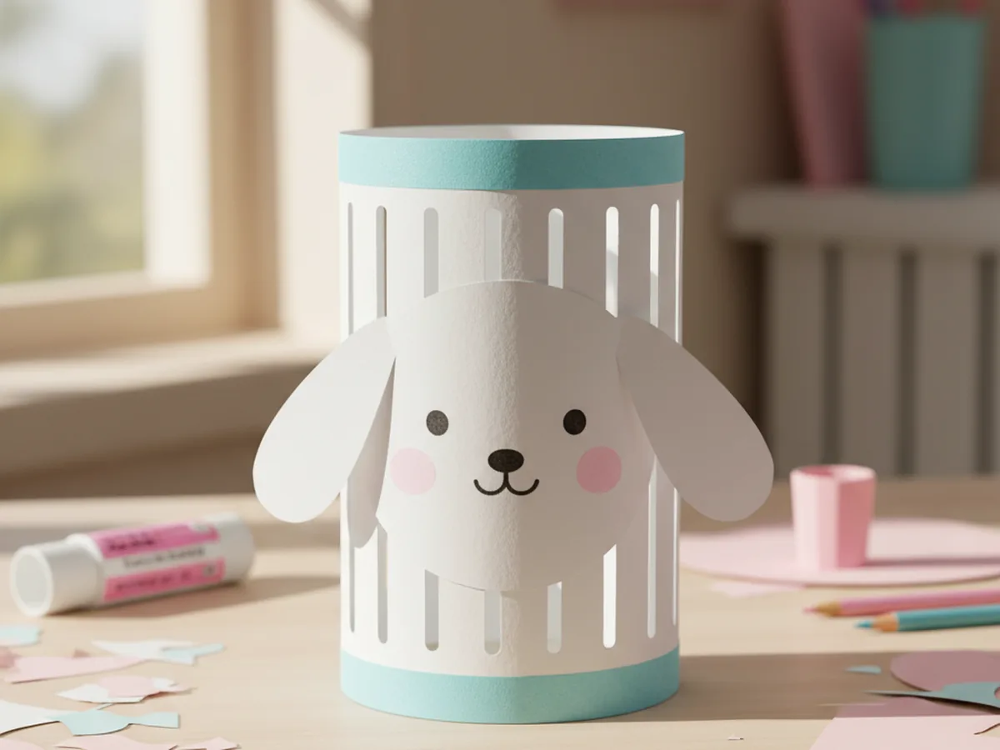
14. Cinnamoroll Paper Fan
Decorate a wide rectangle of white paper with a Cinnamoroll face and a few pastel hearts, then accordion-fold the whole sheet, tape one end, and fan out the other. The result is bright, breezy, and great fun on a hot afternoon. Kids especially love decorating their fan with pastel sticker accents.
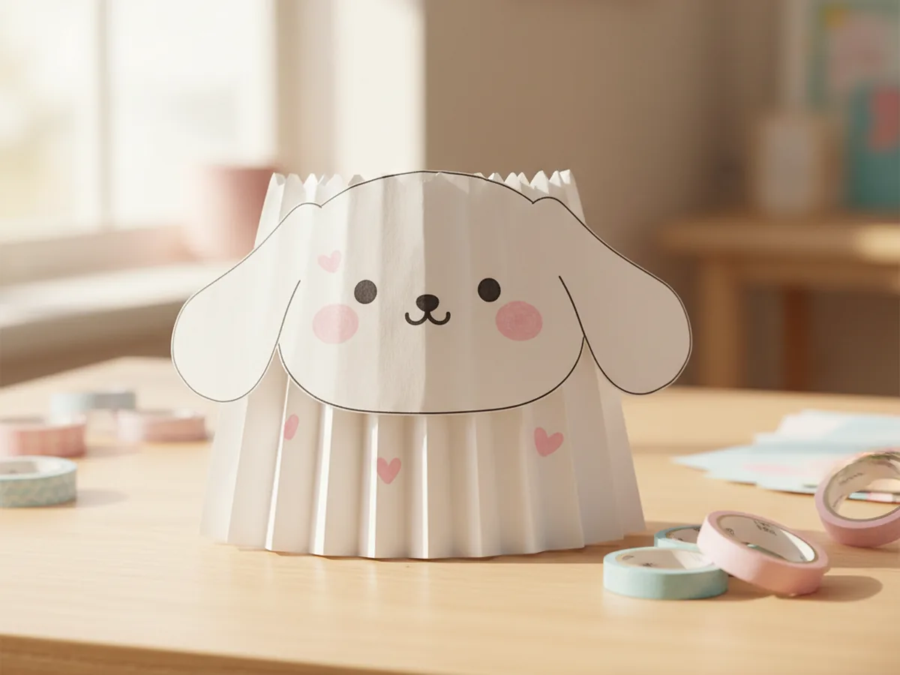
15. Cinnamoroll Standing Card
Fold a piece of cardstock in half so it stands like a tent, then glue a Cinnamoroll cutout right at the fold so his ears and head pop above the top edge. The card stands on its own and looks adorable as a desk decoration or birthday gift topper. This is one of the most rewarding Cinnamoroll paper crafts for kids who love a clear finished result.
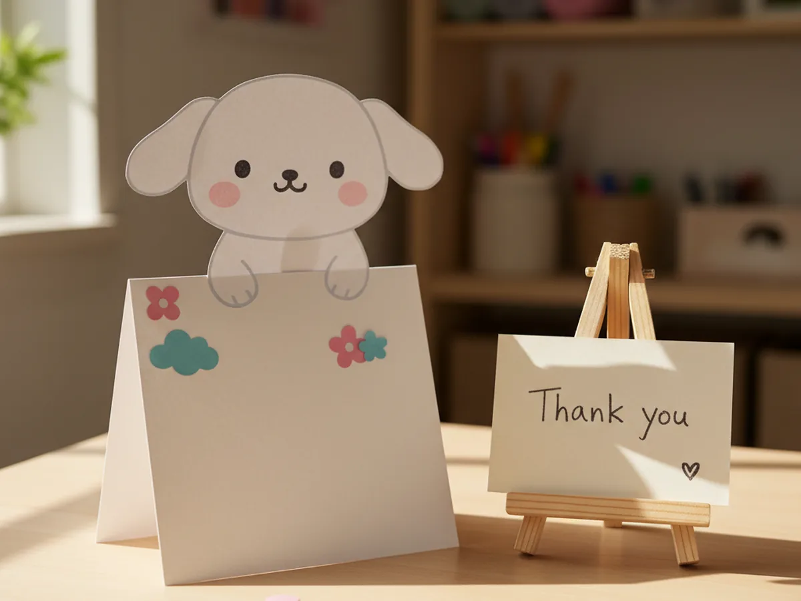
16. Cinnamoroll Cloud Mobile
Cut several small white cloud shapes and a Cinnamoroll silhouette, punch a hole in each one, and string them at varying lengths from a thin wooden dowel or embroidery hoop. Hang the finished mobile near a sunny window in your child's room. The gentle spin of the clouds is mesmerizing for little ones at nap time.
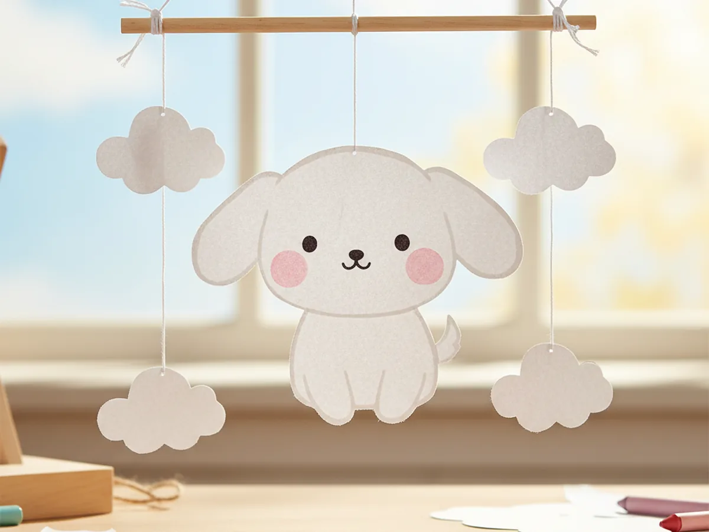
17. Cinnamoroll Birthday Banner
Cut large square or scallop-shaped flags from pastel paper, write one letter of HAPPY BIRTHDAY on each one with a marker, and add a tiny Cinnamoroll face in the gaps between words. String it across the wall above a birthday table. It is the kind of handmade paper craft that makes a child feel like the most special person in the room.
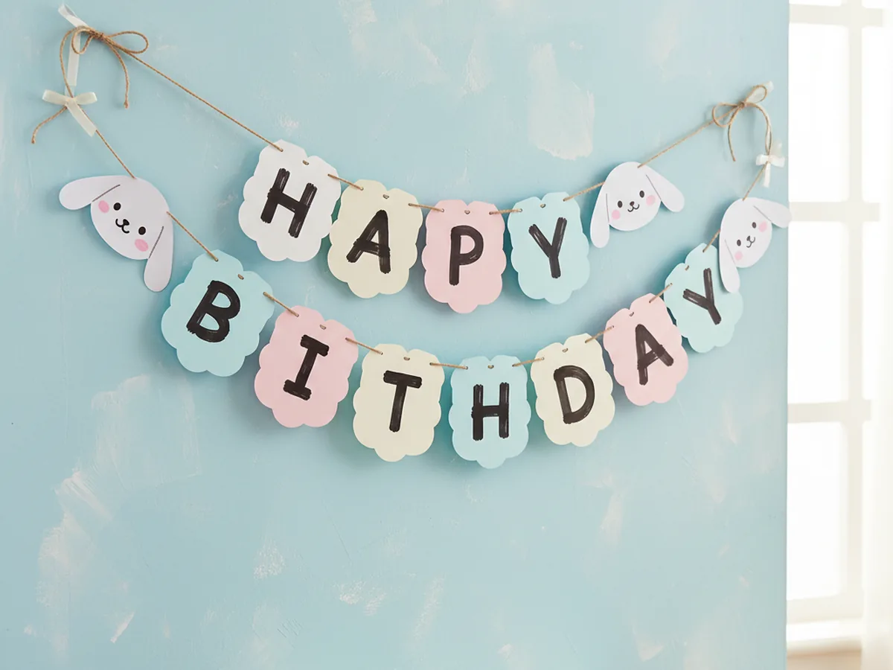
18. Cinnamoroll Paper Stickers
Draw or trace small Cinnamoroll faces, hearts, and clouds onto a sheet of paper, color them in with pastel markers, and stick a piece of double-sided tape on the back of each one. Let your child cut them out and use them to decorate cards, notebooks, or pencil cases. It is the cutest way to make their own DIY sticker pack at home.
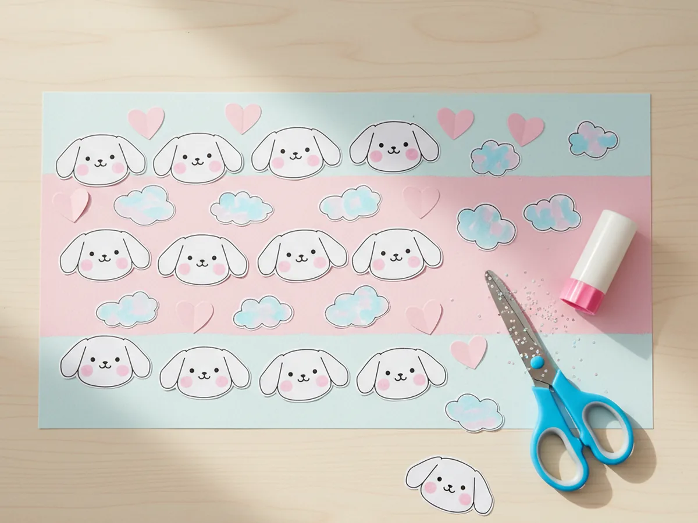
19. Cinnamoroll Fortune Teller
Fold a square of white paper into the classic cootie catcher shape, then decorate the four outer flaps with little Cinnamoroll faces, hearts, and stars. Write sweet predictions or silly questions inside the flaps. Kids love the fold-and-flip game, and this is one of those fun paper crafts that ends in a lot of giggles.
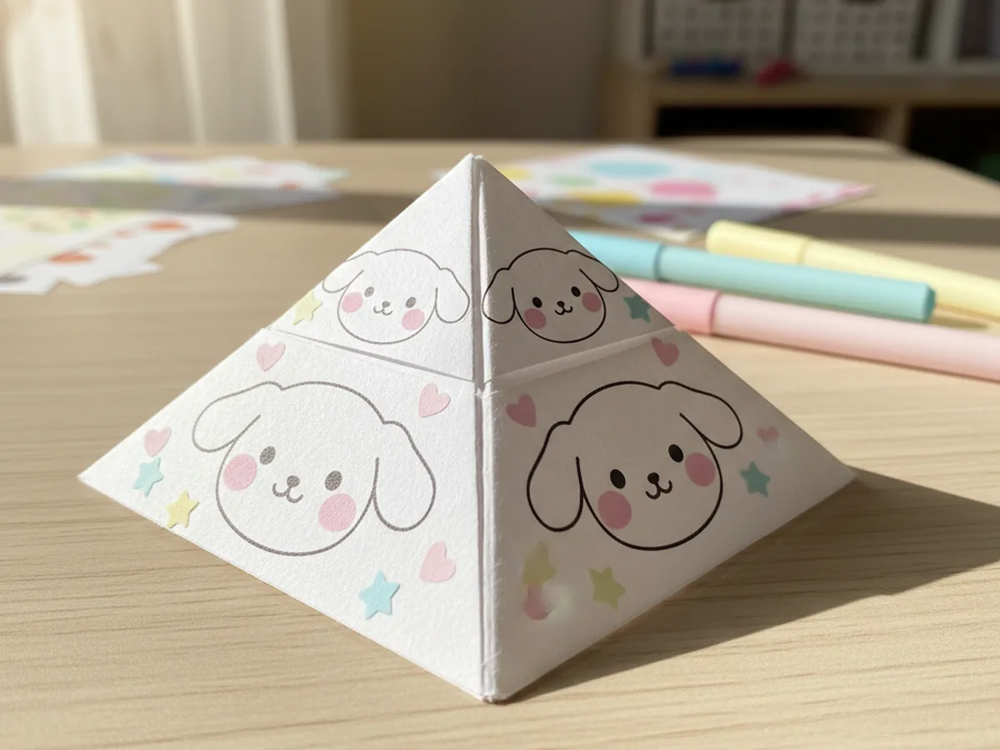
20. Cinnamoroll Mini Treat Box
Use a small printable box template or a square of cardstock folded into a tiny gift box, then decorate the front with a Cinnamoroll face and a pastel ribbon. Fill it with a few candies or a folded note for a friend. These adorable Cinnamoroll paper crafts make the sweetest tiny gifts to hand out at a play date or a birthday party. 💕
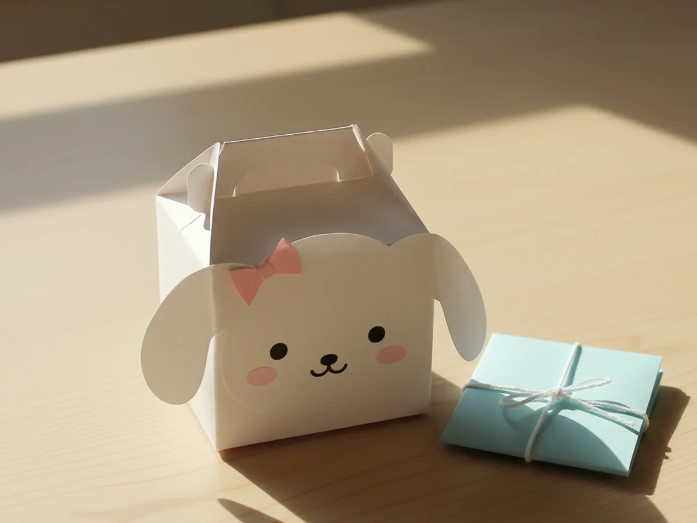
Final Thoughts
The best part of these Cinnamoroll paper crafts is not the paper doll or the tiny treat box, even though those really are adorable. It is the way a few sheets of pastel paper can pull everyone to the kitchen table for an hour of soft conversation, glue smudges, and proud little hands holding up something they made. Pick the project that makes your child smile the brightest and start there. Happy crafting, friend!
More Crafts You'll Love
If your little one is loving all this pastel cuteness, these two ideas pair perfectly with the same sweet vibe.
- Kawaii Paper Crafts: Cute and Cozy Ideas Kids Will Adore
- Easy Paper Doll Craft Kids Will Love to Make Together
Whichever project you pick first, expect plenty of giggles and a fridge that gets a little cuter by the end of the afternoon.